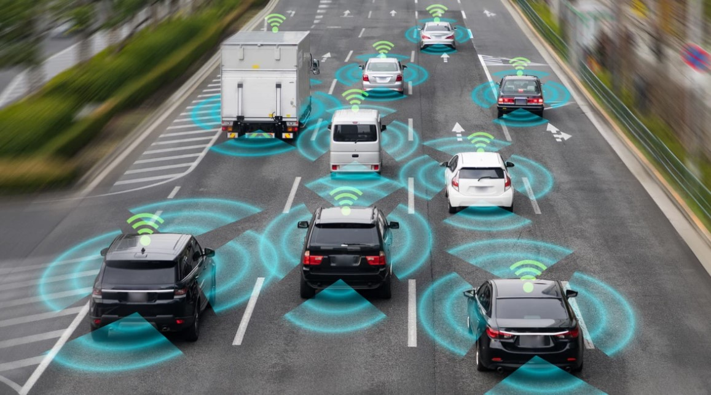

A tecnologia está presente na nossa rotina do dia a dia, diariamente precisamos dela em até simples ações do cotidiano. O carro autônomo foi mais uma das tecnologias desenvolvidas para facilitar a vida das pessoas. O objetivo é produzir um veículo robotizado, projetado para viajar sem que um motorista interfira, juntando conforto e praticidade, com segurança. Desde 2009, empresas como a Google realizam testes de carros e, atualmente, os veículos que foram desenvolvidos são semi autônomos, mas a previsão é que em 2050 já tenhamos veículos totalmente autônomos. Este projeto envolve empresas como Honda, Toyota, Tesla, Hyundai, Volvo, Waymo (uma parceria da Google com a Fiat Chrysler), BMW, Volkswagen, General Motors, Ford, Geely, Mercedes-Benz, Uber (com ofertas de caronas sem um motorista sequer), entre outras. A Sociedade de Engenheiros Automotivos (SAE), classifica as necessidades de níveis de condução autônoma em uma escala que varia de 0 a 5, sendo 0 um veículo totalmente manual e 5 um veículo totalmente automatizado, que consegue dirigir em qualquer lugar sem nenhuma interferência humana. Para que um carro autônomo consiga realizar tarefas é necessário o uso de um software baseado em uma inteligência artificial que deve atuar juntamente com sensores e radares instalados na carroceria do veículo. O software deverá realizar ações como calcular o melhor trajeto, o momento certo de realizar ações como frear, virar a direita, acelerar, manter-se na faixa, manter uma distância de outros veículos, além da possibilidade de comunicação com outros veículos que façam uso de uma tecnologia similar. No Brasil, a tecnologia dos carros autônomos não está tão avançada, mas existe. Os carros em teste aqui se encontram na classificação 1 e 2, ou seja, que necessitam de uma supervisão de um motorista. Os maiores entraves para a disseminação dessa tecnologia no Brasil são a infraestrutura, questões éticas e a legislação vigente.

Curiosidades:
Já houveram acidente com testes da carros semi-autônomos e autônomos, sendo 04 mais famosos: O primeiro acidente foi com carro semi-autônomos da Google, veículo bateu na lateral de um ônibus, ninguém se feriu. De acordo com pericia feita, o computador de bordo entendeu que o coletivo ia reduzir para deixá-lo passar. Já em 2016 e 2018 houveram acidentes envolvendo vitimas fatais em testes realizados pela empresa Tesla, no primeiro caso, o sistema não detectou carreta que virava para esquerda, no segundo caso, não esta claro ainda se houve falha do sistema ou se o motorista não reagiu a tempo, em ambos os casos os motoristas vieram a falecer. Por uma investigação realizada, se provou que por confiar demais na tecnologia, ainda em teste, o motorista se distraiu, não reagindo a tempo. O ultimo e mais recente caso foi o primeiro envolvendo um carro 100% autônomo, ou seja, sem a necessidade de intervenção humana. Em março deste ano a empresa UBER realizava testes com carro autônomo da montadora Volvo em Arizona/EUA, durante o teste uma pedestre atravessou a estrada, carro falhou em detectar sua presença, atropelando a vitima, que não resistiu aos ferimentos e morreu a caminho do hospital. O carro possuía radar e câmeras no teto, sensores em torno do veiculo, computador de bordo que processa todas as informações, o motorista no caso não estava no comando no momento. Peritos afirmaram que carro estava no limite legal da via e que a aparição repentina da vitima, em uma estrada a noite dificulta a afirmação que um motorista conseguiria evitar o acidente ou que houve realmente uma falha do sistema do carro. Em todos os casos citados, as empresas vieram a publico se desculpar e garantir a consistência de seus sistemas, tendo no máximo de arcar com multas.